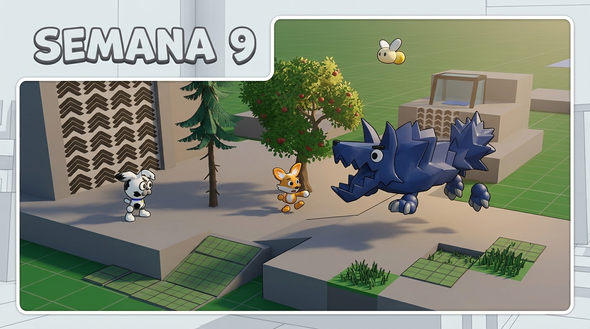
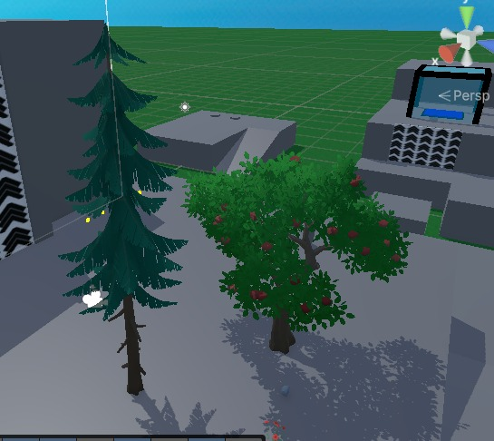

BITÁCORA DE DESARROLLO
Semana 9
Diseño y desarrollo del juego
Durante esta semana continuamos avanzando en el diseño de Paw Team, trabajando principalmente en el desarrollo de un enemigo y en la selección de los assets que utilizaremos para construir el primer nivel.

¿Qué queríamos probar?
El objetivo de esta semana fue continuar dándole forma al diseño visual del juego y avanzar en algunos de los elementos que harán parte de los primeros niveles de Paw Team.
Ferocan paso rápido
Durante esta semana trabajamos en el modelado y en las primeras animaciones de prueba del enemigo llamado Ferocan paso rápido. El objetivo fue comenzar a darle forma a uno de los enemigos que harán parte de la experiencia de Paw Team.
En esta etapa nos enfocamos principalmente en probar su modelo y sus movimientos, buscando tener una primera referencia de cómo funcionará y se verá dentro del juego.
Assets para el primer nivel
También realizamos una selección de diferentes assets disponibles en Unity que utilizaremos para construir los escenarios del juego. Estos elementos fueron escogidos pensando principalmente en el diseño del primer nivel, que estará ambientado en un bosque.
Después de seleccionar los assets, trabajamos en sus texturas para adaptarlos mejor al estilo visual que buscamos para Paw Team. De esta manera, comenzamos a establecer una base visual para la construcción y decoración del primer nivel.

Resultado de la semana
Durante esta semana logramos avanzar en dos aspectos importantes del desarrollo visual de Paw Team, comenzando a definir tanto algunos de sus enemigos como los elementos que formarán parte del primer nivel.
¿Qué observamos o descubrimos?
Durante el desarrollo observamos que comenzar a trabajar en los enemigos y en los assets del escenario nos permite tener una idea más clara de cómo se verá el juego a medida que avance su desarrollo.
¿Qué cambiaremos en la siguiente versión?
- Continuaremos trabajando en las animaciones y comportamiento de los enemigos.
- Seguiremos adaptando los assets seleccionados para construir el primer nivel.
- Avanzaremos en la construcción y organización del escenario del bosque.